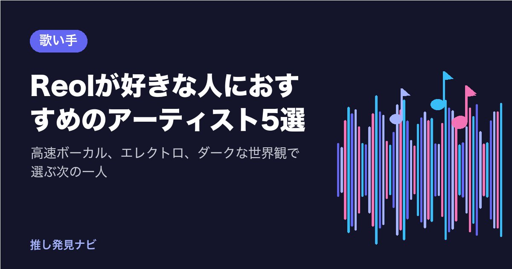

Reolが好きな人におすすめのアーティスト5選｜高速ボーカル、エレクトロ、ダークな世界観で選ぶ次の一人
※この記事はプロモーション（広告）を含みます

Reolの「ギミー！」や「第六感」で、言葉が高速で畳みかけてくるのに、一語一語がはっきり耳に届く感覚にしびれたことはありませんか。
この記事を読むと、Reolの好きなところを4つに分けて、次に聴きたいアーティストを5組の中から選べます。
ニコニコ動画の歌い手「れをる」として出発し、3人ユニットREOLを経て、2018年にソロのReolとして再出発、2026年に4thアルバム『美辞学』を出したReolの歩みを短くたどってから、5組を共通点と違いで紹介します。
Reolの魅力をおさらい
Reol（レオル）は、長野県松本市出身、1993年11月9日生まれのシンガーソングライターです。2012年ごろにニコニコ動画へ歌ってみた動画を投稿し、「れをる」の名前で人気を集めました。
2015年には、作編曲のギガ、映像のお菊と3人でユニットREOLを結成し、2016年のアルバム『Σ』に入った「ギミー！」「宇宙の季節」で注目されます。REOLとしての活動は2017年に終わり、2018年に「Reol」名義でソロとして再始動しました。同じ年の3月にミニアルバム『虚構集』、10月に1stフルアルバム『事実上』を出しています。
2020年には「第六感」がヒットし、2ndアルバム『金字塔』を発表。2023年の3rdアルバム『BLACK BOX』を経て、2025年11月9日には横浜アリーナで単独公演を行い、アニメ『青の祓魔師 雪ノ果篇』のオープニング「RE RESCUE」も担当しました。
2026年1月21日には4thアルバム『美辞学』を発売し、LiSAが参加した「DEAD CENTER」も収録されています。3月からの全国ツアーは7月10日のLINE CUBE SHIBUYAで終幕し、11月29日の大阪、12月15日のZepp Shinjukuでは、ファンクラブ限定のツアー「極秘 LEGIT #2」が予定されています。
| Reolの魅力 | 具体的には |
|---|---|
| 高速の言葉さばき | ボカロ的な細かい譜割りを、生の声で歌い切る |
| エレクトロの音 | エレクトロ・トラップ・ハイパーポップの速いビート |
| 文語寄りの言葉 | 「虚構」「失楽園」「美辞学」のような漢語と、英語・スラングの組み合わせ |
| 世界観の一貫性 | 衣装・MV・ビジュアルまでそろえたセルフプロデュース |
あなたがReolのどこに惹かれたかで、次に聴く1組が変わります。5組を順番に見ていきましょう。
ネット発の歌い手から大きな舞台へ進んだ後輩を聴きたい人へ｜Ado
ニコニコ動画の歌い手から出発し、ネットの外の大きな舞台まで進んだ点で、AdoはReolの後輩にあたる存在です。
Reolとの共通点は、歌い手文化の出身で、作り手の曲を圧倒的な歌唱で自分のものにすること、そして海外にも届いていることです。違いは、声の向かう方向です。Reolがエレクトロ寄りのクールさで言葉を高速に並べるのに対し、Adoはロック寄りの叫びと、低音から高音までの大きな振り幅で感情を外へ押し出します。また、Adoは顔を出さず、ビジュアルはイラスト、ライブはシルエットで歌うという形を貫いています。国立競技場や日産スタジアムを声だけで埋めた歩みを知ると、Reolが切り開いた「歌い手からアーティストへ」の道の先が見えてきます。
「うっせぇわ」「新時代」「ビバリウム」から聴いてみてください。詳しくはAdoが好きな人におすすめのアーティスト5選もあわせてどうぞ。
高音のサビとセルフプロデュースが好きな人へ｜星街すいせい
星街すいせいは、2018年に個人勢のバーチャルシンガーとして活動を始め、ホロライブ所属を経て、2025年2月に日本武道館でのソロライブを達成した歌い手です。
Reolとの共通点は、ネットから出発し、自分の見せ方を自分で決めてきたことです。Reolが「れをる」から「Reol」へ読み方を変えて再出発し、衣装や映像まで一貫させたように、星街すいせいも、2026年3月に個人事務所「Studio STELLAR」を設立し、自分の歩みを自分で選んでいます。違いは声の置き方です。Reolが低音の太さと高音の鋭さを両方使ってクールに攻めるのに対し、すいせいは張りのある高音のサビで、思わず一緒に歌いたくなる方向へ向かいます。
「Stellar Stellar」「ビビデバ」から聴いてみてください。詳しくは星街すいせいが好きな人におすすめの歌い手・シンガー5選もあわせてどうぞ。
同じニコニコ動画出身の、仮面と低音が好きな人へ｜超学生
超学生は、2012年12月に小学生でニコニコ動画に歌ってみた動画を投稿して活動を始めた男性の歌い手です。ベネチアンマスクと、「超絶ガナリヴォイス」と呼ばれる力強い低音の歌唱で知られ、2022年10月に『仮面ライダーBLACK SUN』の主題歌「Did you see the sunrise?」でメジャーデビューしました。
Reolとの共通点は、同じニコニコ動画の歌ってみた文化から出発し、ボカロPの曲と深く結びついてきたことです。超学生は2024年に、6人のボカロPと組んだ1st EP『MAR6LE』を出しています。違いは声の質です。Reolが高速の言葉を鋭く刻むのに対し、超学生は低音のガナリで言葉に重さを乗せます。声変わりで約1オクターブ下がった声を武器に変えた歩みも、自分の見せ方を貫いてきたReolの姿と重なります。
「Did you see the sunrise?」「ガトリングアジテイタア」「阿弥陀籤」から聴いてみてください。
『DEAD CENTER』で共演した声を、本人の曲で聴きたい人へ｜LiSA
LiSAは、2026年1月発売のReolのアルバム『美辞学』に入った「DEAD CENTER」に参加した、岐阜県出身のロックシンガーです。2011年にソロデビューし、『鬼滅の刃』の「紅蓮華」「炎」で広く知られるようになりました。2026年はソロデビュー15周年で、7thアルバム『LACE UP』を出しています。
Reolとの共通点は、アニメ主題歌でも存在感を放つ、強く張りのある声です。違いは音の土台です。Reolがエレクトロやトラップの速いビートの上で言葉を並べるのに対し、LiSAはパンクやラウドロックの疾走感とストリングスの劇的さの上で、「立ち上がる・戦う」決意を日本語の口語で率直に歌います。「DEAD CENTER」で2人の声の重なりを聴いたあとにLiSA本人の曲へ進むと、同じ声の別の顔に出会えます。
「紅蓮華」「炎」「crossing field」から聴いてみてください。詳しくはLiSAが好きな人におすすめのアーティストもあわせてどうぞ。
ダークで硬質な世界観が好きな人へ｜MYTH & ROID
MYTH & ROIDは、作曲家Tom-H@ckを中心に2015年に始動したユニットです。『オーバーロード』のエンディング「L.L.L.」でデビューし、『Re:ゼロから始める異世界生活』『幼女戦記』の主題歌でアニソンの世界に定着しました。2017年からはKIHOWがボーカルを務めています。
Reolとの共通点は、漢語や造語風の硬い言葉と英語を混ぜたタイトル、そして映像まで含めて世界観を作り込む姿勢です。Reolの「失楽園」「美辞学」のような言葉選びが好きな人は、MYTH & ROIDの「Paradisus-Paradoxum」「VORACITY」の響きにも惹かれるはずです。違いは視点です。Reolが一人称で挑発的に語るのに対し、MYTH & ROIDは作品のキャラクターや物語の語り手に寄せた視点で、「死と再生」「運命」をデジタルロックとシンフォニックな音で描きます。
「STYX HELIX」「Paradisus-Paradoxum」「JINGO JUNGLE」から聴いてみてください。
5組を「Reolの好きなところ」で選ぶ
最後に、5組を一覧にしました。あなたがReolのどこに惹かれたかで、1組だけ選んでみてください。
| Reolの好きなところ | おすすめ | 入口の1曲 |
|---|---|---|
| 歌い手から大きな舞台へ進んだ歩み | Ado | 「うっせぇわ」 |
| 自分で見せ方を決めるセルフプロデュース | 星街すいせい | 「Stellar Stellar」 |
| ニコニコ動画出身・ボカロPとの結びつき | 超学生 | 「Did you see the sunrise?」 |
| 「DEAD CENTER」の共演、強い声 | LiSA | 「紅蓮華」 |
| 漢語と英語の硬い言葉、ダークな世界観 | MYTH & ROID | 「STYX HELIX」 |
5組全員を聴く必要はありません。入口の1曲を聴いて、合わなければ次の1組へ。それが、無理のない「推しの広げ方」です。歌い手文化そのものから知りたい人は、歌い手文化の入門から入ると、5組の立ち位置が見えやすくなります。
まとめ
- Reolの魅力は、高速の言葉さばき・エレクトロの音・文語寄りの言葉・世界観の一貫性の4つ
- Adoは、同じ歌い手文化から大きな舞台へ進んだ後輩。ロック寄りの叫びで聴き比べる楽しみ
- 星街すいせいは、自分の歩みを自分で選ぶバーチャルシンガー。高音のサビが魅力
- 超学生は、同じニコニコ動画出身。仮面と低音のガナリで言葉に重さを乗せる歌い手
- LiSAは、『美辞学』の「DEAD CENTER」で共演した声。ロックの疾走感で決意を歌う
- MYTH & ROIDは、硬質な言葉とダークな世界観を、物語の語り手の視点で描くユニット
Reolと、その世界を一緒に形にしてきた作り手の皆さん、そして5組のアーティストの歩みに、心から感謝します。
まずは表の中から1組、入口の曲を1曲だけ聴いてみませんか。この1曲だけで、次の推しの地図は十分です。
あなたがReolのいちばん好きなところは、4つのうちどれでしたか？
楽曲は各アーティストの公式チャンネルや配信サービスでお楽しみください。
最後まで読んでくださり、ありがとうございました。
気になった1曲を、今日1回だけ聴いてみませんか。各アーティストの公式チャンネルや配信サービスで聴けます。
あなたの好きなアーティストは誰ですか？
この記事は下書きにAIを使い、内容は運営者が公式情報で確認しています。